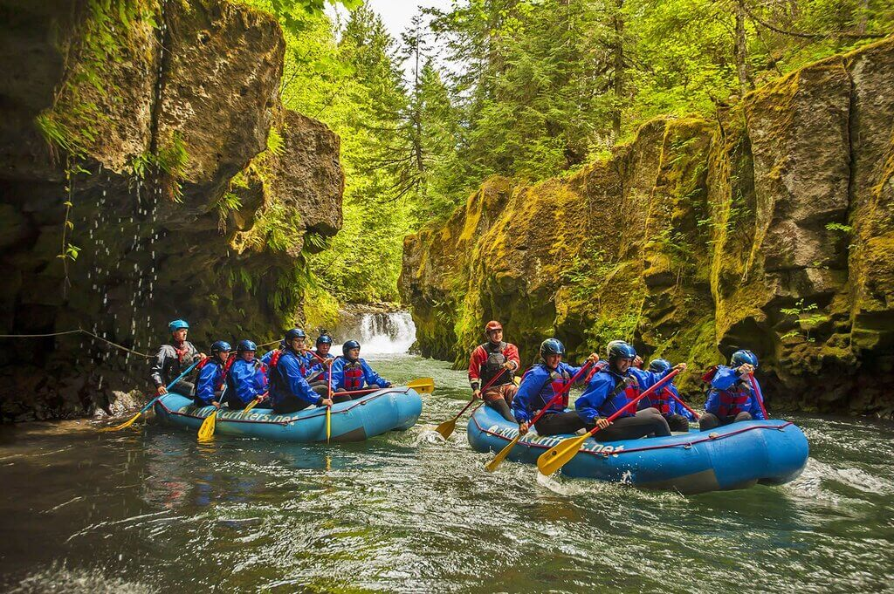
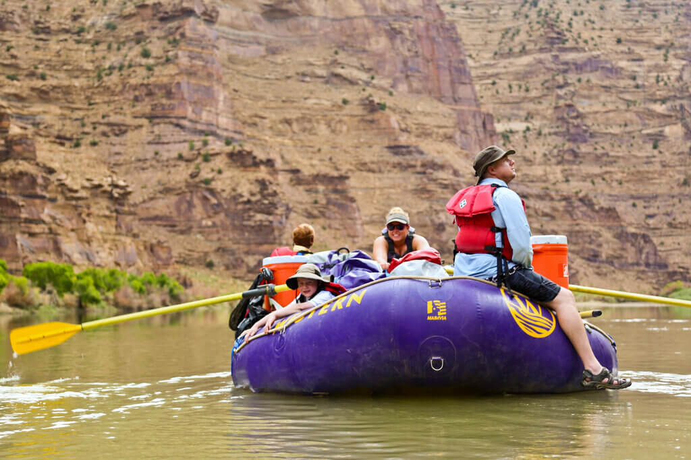
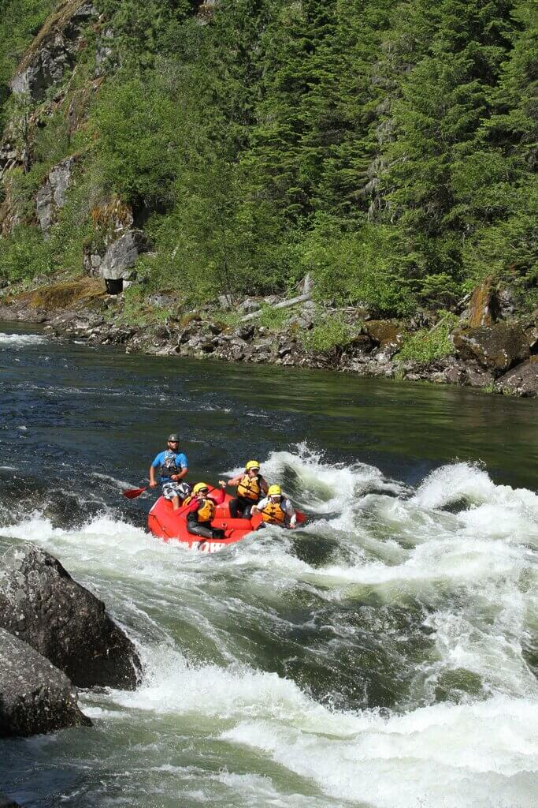

Rivers we Run
Salmon river
The White Salmon River is a popular getaway spot year-round, although the season usually stays steady from March to November1. Early season, when flows are the highest, is the best time to come if you are looking for a wild ride. By August, after the peak runoff, the river mellows (just a bit) to still-fun, but wider-spaced rapids2. The seasonal window of spring runoff is a spectacular moment in the annual cycle of any free-flowing river and makes it the best time to raft the Salmon River3. Winter and spring are the seasons for the Middle Fork of the Salmon River4.
Green river
The Green River in Utah is a thrilling playground for whitewater enthusiasts. Carving its way through the stunning landscapes of Dinosaur National Monument, this iconic river offers a rollercoaster of excitement and adventure for rafting enthusiasts. With its meandering canyons and challenging rapids, the Green River promises a heart-pounding experience as intrepid paddlers navigate through frothy waves and around towering red rock formations. The juxtaposition of adrenaline-pumping rapids and the serene beauty of Utah's wilderness makes the Green River an unforgettable destination for anyone who is passionate about the ultimate whitewater rafting escapade.
Lochsa river
The Lochsa River, nestled in the wilderness of Idaho, is a cherished playground for whitewater enthusiasts. This iconic river offers a thrilling adventure for rafting enthusiasts, with its twisting course through deep forests and challenging rapids. The Lochsa River provides a heart-pounding experience as fervent paddlers conquer frothy waves and navigate through pristine natural surroundings. The contrast of adrenaline-pumping rapids and the unspoiled beauty of the Idaho wilderness makes the Lochsa River an unforgettable destination for those who are passionate about the ultimate whitewater rafting escapade.
